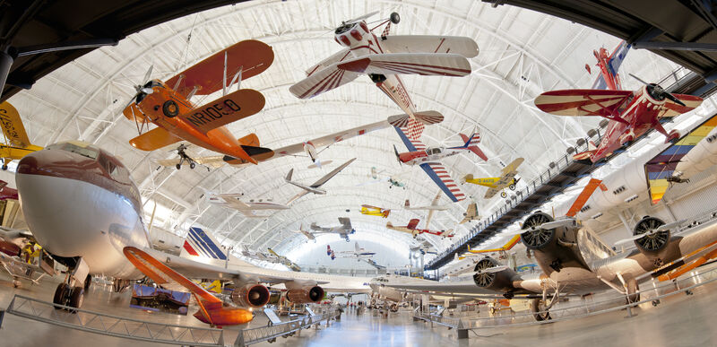
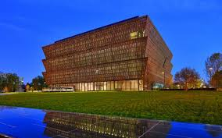

Welcome
s known for its natural beauty and cities like Seattle, with its capital in Olympia.
Top Attractions
- Smithsonian's National Air and Space Museum 
- National Museum of African American History and Culture 
- Smithsonian National Museum of Natural History

Famous Local Food
famous produce like apples and cherries, along with a wide variety of seafood like salmon, Dungeness crab, and oysters
Contact Information
For more information, visit: Washington Official Website
Email: info@washington-tourism.ph